Open the live demos
QE Smart Reporting Templates
Runs on: Website
How to open: Tap Open live demo
Ask Thatha, Tribute Chatbot
Runs on: Website
How to open: Tap Open live demo
Screens and architecture
Mira, AI Project Intelligence Assistant
Runs on: Runs locally
How to open: Setup steps and walkthrough video in the GitHub README
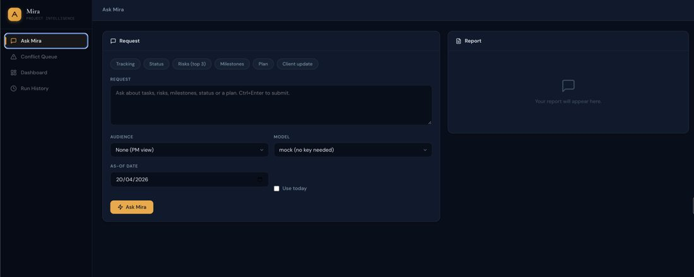
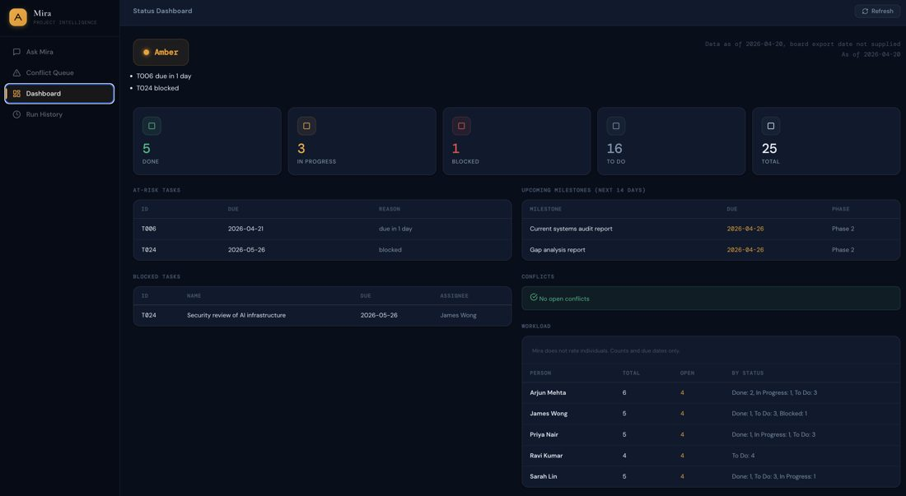
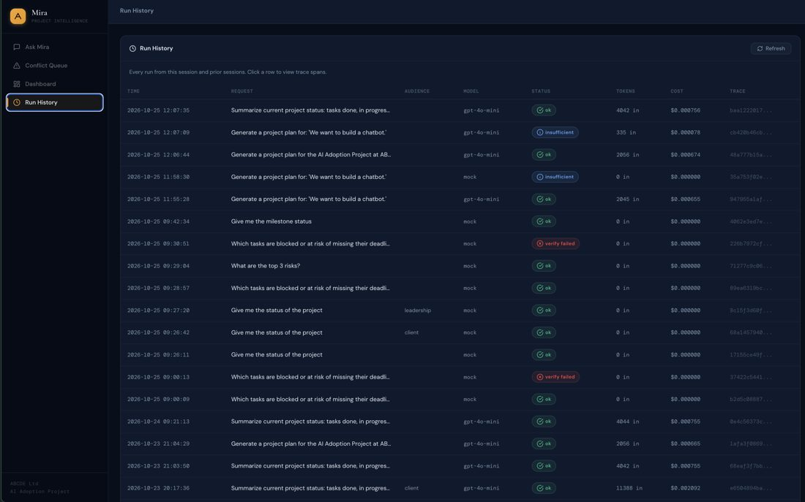
Program Governance Toolkit
Runs on: Python scripts and HTML templates
How to open: Download from the GitHub repo and open the HTML files
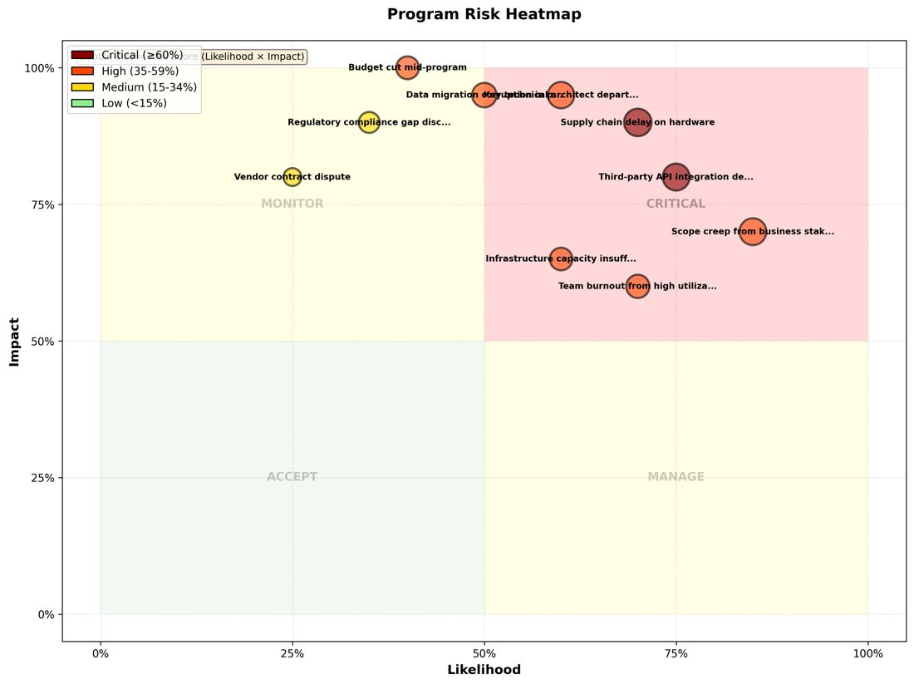
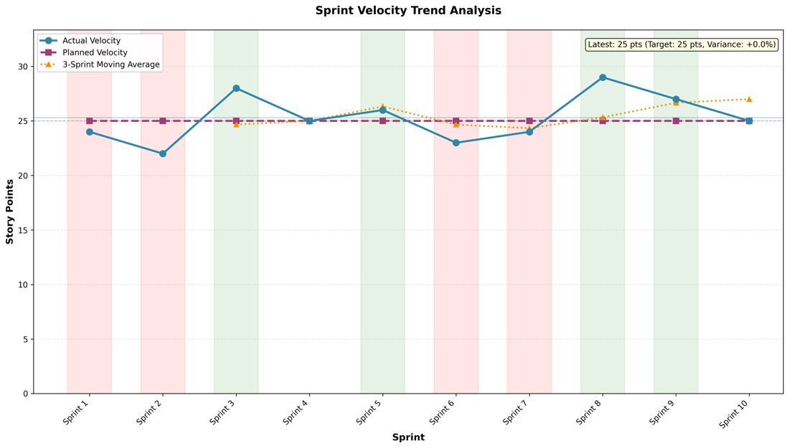
TPM Launch Readiness Agent
Runs on: n8n workflow
How to open: Import the workflow file from the GitHub repo into n8n
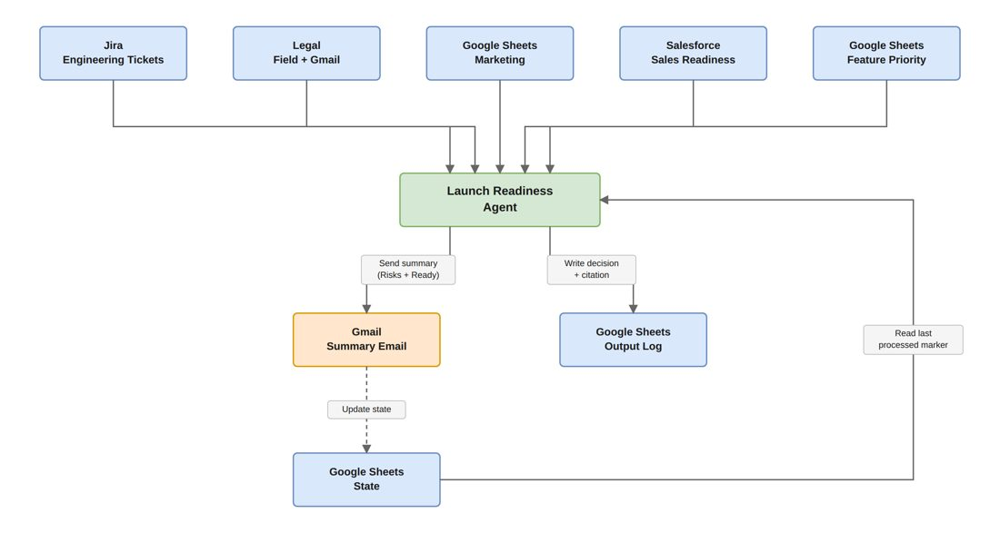
Checkout Incident Detection Agent
Runs on: Zapier Agents
How to open: Sign-in required, access on request. Architecture in the GitHub repo
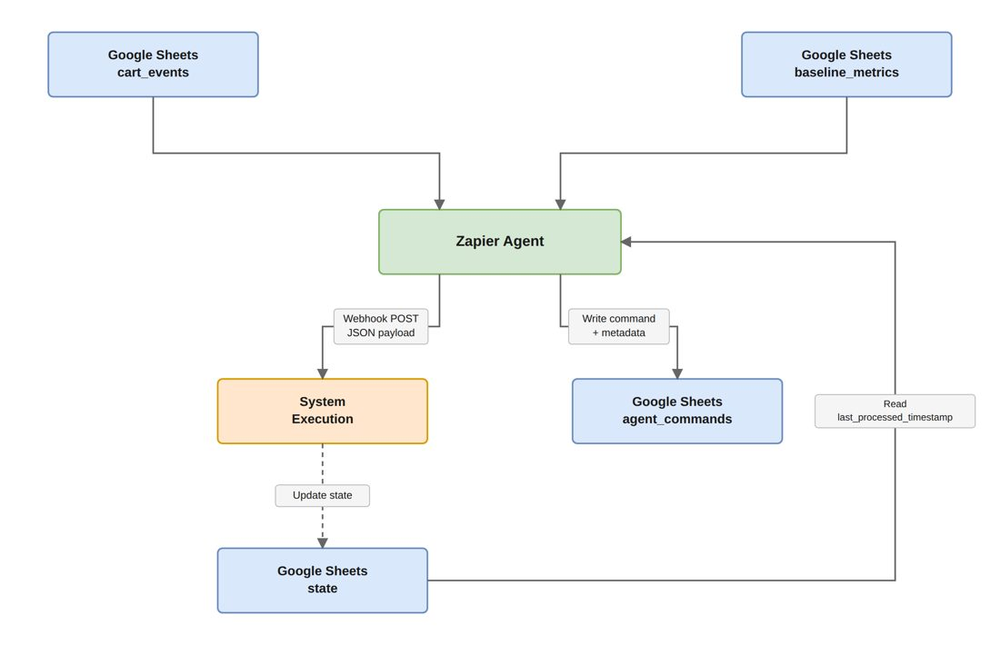
AI RFP Response Generator
Runs on: Streamlit app, runs locally
How to open: Setup steps in the GitHub README (needs your own API key)
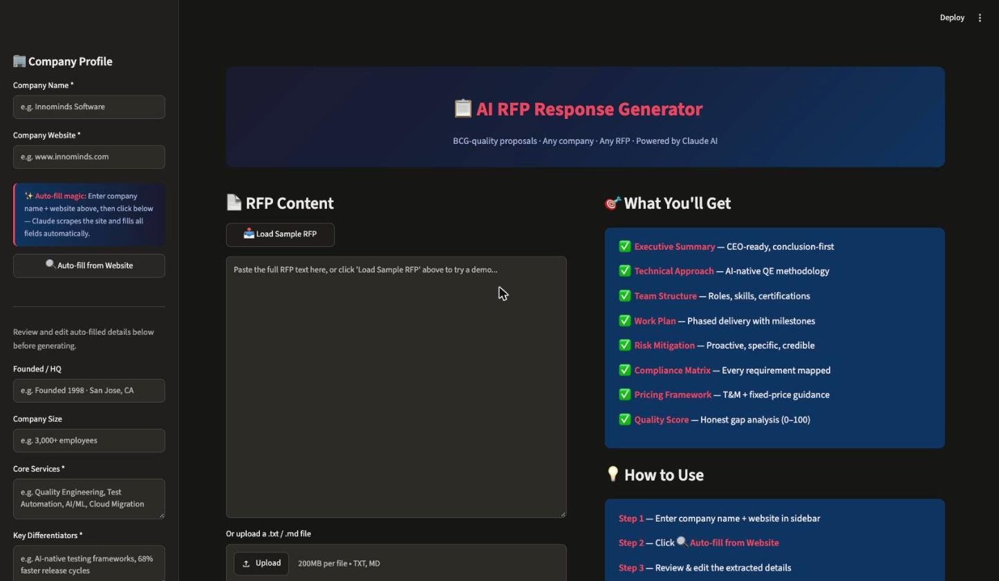
BFSI AI Observability Layer
Runs on: Dify Cloud and Langfuse
How to open: Sign-in required, access on request. Importable Dify file in the GitHub repo
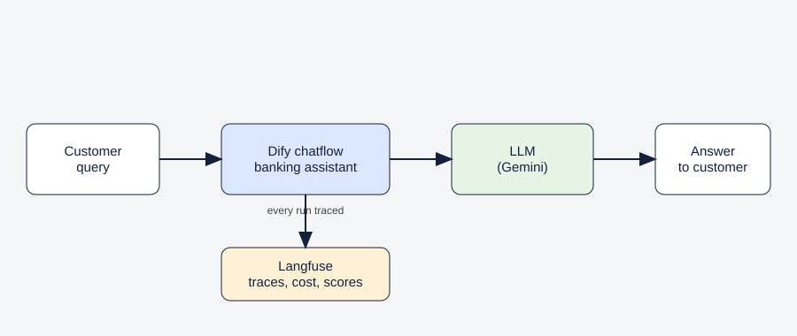
Test Strategy Generator
Runs on: Prompt
How to open: Copy the prompt from the GitHub repo
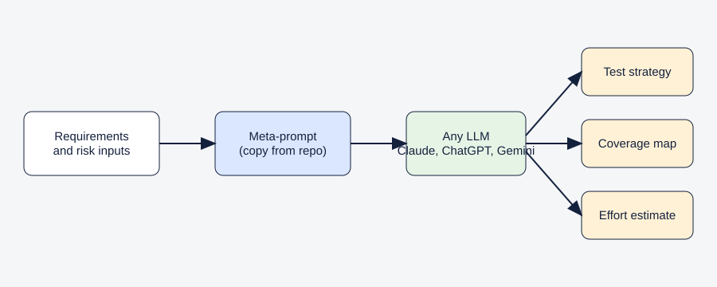
Artha, Personal Finance
In development. Screens are demo screens with sample data.
Runs on: Next.js app, runs locally
How to open: Setup steps in the GitHub README
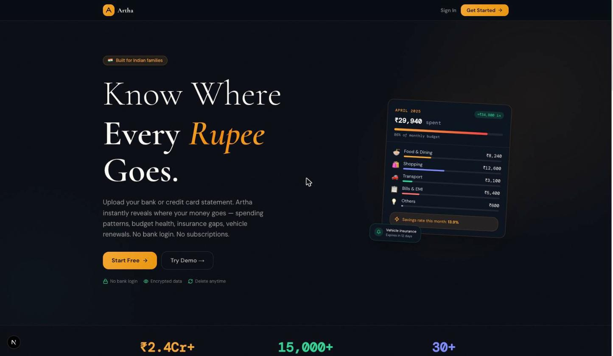
GitHub only
Delivery Excellence Dashboard
Runs on: Dash app, runs locally
How to open: Setup steps in the GitHub README
IDEWS Credit Delinquency Platform
Runs on: Docker stack, runs locally
How to open: Setup steps in the GitHub README
AI QE Innovation Lab
Runs on: Python and Streamlit, runs locally
How to open: Setup steps in the GitHub README